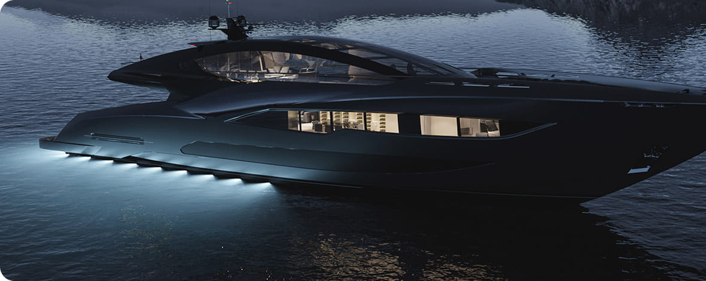
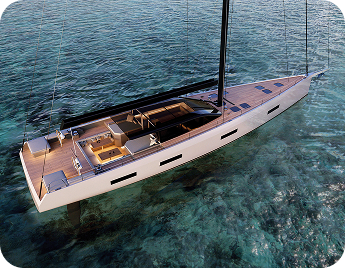
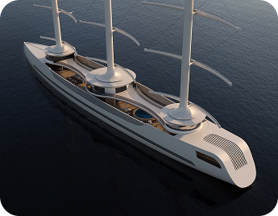
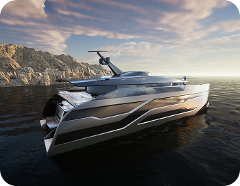
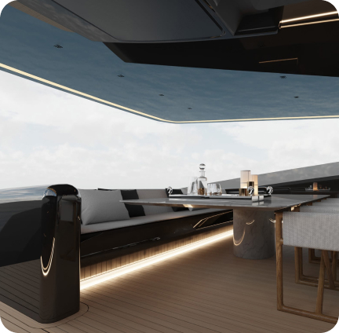
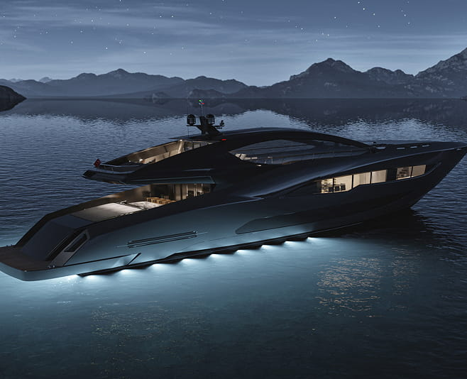

Explore the High Seas with Our Luxury Yacht Rentals
Experience the freedom and luxury of yachting on the open seas. Choose from our top-of-the-line yachts and embark on an unforgettable journey surrounded by breathtaking views and state-of-the-art amenities.
Yacht rentalYachtJet fleet is here to take you on the ultimate adventure
From spacious decks to state-of-the-art technology, our yachts are designed to provide the perfect blend of luxury and functionality.
Take a look at our selection below and choose the yacht that matches your needs and preferences.No matter which yacht you choose, our experienced crew will ensure that your journey is smooth and enjoyable. Book now and get ready for an unforgettable adventure on the high seas.

Choose your dream yacht and sail away into the sunset
-

Arrow
luxury yahts
-
length
48m(155ft) -
builder
48m(155ft) -
built
48m(155ft) -
guests
48m(155ft) -
price
48m(155ft)
-
-

benetti oasis 40m bo122
luxury yahts
-
length
41m (133ft) -
builder
Benetti -
built
2025 -
guests
10 in 5 cabins -
price
€23,210,000
-
-

belle anna
luxury yahts
-
length
50m(155ft) -
builder
ISA -
built
2012 -
guests
12 in 6 cabins -
price
€21,000,000
-
Advantage
-
Swimming and water sports: try your hand at water skiing
-
Fishing: try to catch your own dinner
-
Sightseeing tours: take a shore or island tour, enjoy the views and sunsets from the water
-
Rest and relaxation: read a book or listen to music while enjoying the outdoor atmosphere.

Rent a yacht now

YachtJet take pride in providing the best possible service and experience to our customers
Our customers have enjoyed unforgettable moments on our yachts. Don't just take our word for it - read on to find out what they have to say about their journey with us.
-
John Wax
I rented the Lagoon 620 with my family for a week-long vacation and it was the best decision ever. The yacht was spacious, comfortable, and luxurious, and the crew took care of everything.
-
Victoria Romashenko
The Sunseeker Manhattan 66 was the perfect choice for our romantic getaway. The yacht was beautifully designed, with all the amenities we needed, and the crew was attentive and friendly.
-

Ihor Trachuk
The Azimut 80 was the most luxurious yacht I've ever been on. The cabins were spacious and elegant, and the outdoor areas were perfect for relaxing and entertaining. Worth every penny!